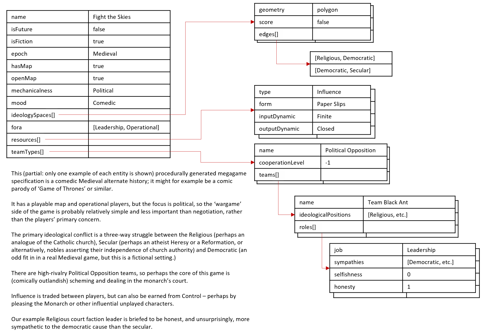
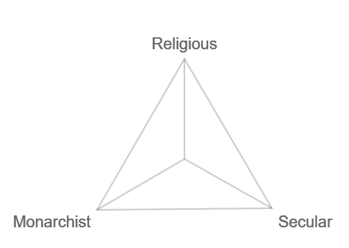
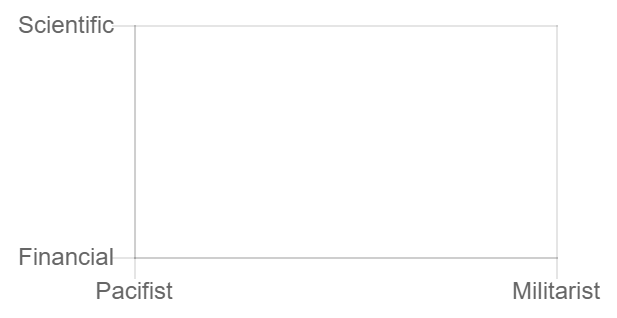

ABOUT MegagameML
This generator is based around a JSON representation of a megagame design I call megagameML. This page explains the model it uses
Example diagram
A megagameML game model
The intrinsic properties of a game in this model are:
- name: of course.
- isFuture and isFiction: true/false. Future settings are always fiction, of course.
- epoch: the historical or future genre period.
- hasMap and openMap: Whether there is a geo/spatial map and whether it's "open" or "closed" to players
- mechanicalness: I use this to describe, in words, a continuum from "talking-based" games to "mechanics-based" games.
- mood: I use this to record a continuum from comedic and light-hearted (e.g. pirates!) to sombre (appropriate in e.g. games featuring WW2)
In megagameML this information might look like this:
{
"name": "Watch the Thunder",
"isFuture": false,
"isFiction": false,
"epoch": "Early Modern",
"hasMap": true,
"openMap": true,
"mechanicalness": political,
"mood": comedic
...
}
Fora
I use the term "fora" (pedant-speak for 'forums') to describe a simple list of channels of player interaction. The best-known fora are probably those in Watch the Skies: the UN forum, the scientific community forum, and the military map. Other examples include policy and cabinet from AVBC, or the Colony Council legislative assembly in Infinite Horizons. My generator is quite simple and currently assumes that there is always exactly one player per forum on every team.
In megagameML this information might look like this:
... "fora": [ "Leadership", "Political", "Scientific", "Diplomatic" ] ...
Ideology spaces
Many megagame designs seem to create relationships between teams and players by distributing them amongst a number of types that I describe in general as 'ideologies'. Examples in my experience are A Very British Civil War, in which Fascist, Left-wing, Royalist and Church factions are at war; and a Very British Coup, which breaks the Labour government into six factions with differing economic and social ideologies.
Because the ideologies are useful only in terms of their relationships to OTHER ideologies, I work with edges (pairs of comparable ideologies) rather than nodes (individual ideologies.)
geometry: polygon
My most general model of an ideology space is an ideology 'polygon'. The simplest non-empty 'polygon' is actually a single edge (e.g. "Liberal-Conservative" or "Calmness-Terror") which I refer to by the special name of "tracker."
Two edges (e.g. Conservative-Liberal and Liberal-Radical) imply a third edge (e.g. Conservative-Radical) and create a triangle, and so on. In this "polygon" model, the edges are NOT independent. For example, in ABVC, you cannot make policy highly Traditional without it ceasing to be Liberal and Radical.
My generator has a very limited understanding of ideology, which can lead to quite unintuitive layouts when the number of edges is high.
In megagameML this might look like this:
...
"ideologySpaces": [
{
"geometry": "tracker",
"edges": [
["Calmness", "Terror"]
]
"score": true
},
{
"geometry": "polygon",
"edges": [
["Industrial", "Financial"],
["Financial", "Scientific"]
// My generator leaves the final edge of a polygon
// implicit for technical reasons
],
"score": true
}
]
...
geometry: grid
One of the most common models for ideology in games is to use two INDEPENDENT edges as the axes of a 2D graph. I call this a 'grid', but in strict theoretical terms, because the two axes are independent, it is simply two "trackers" displayed on a shared 2D diagram.
In megagameML this might look like this:
...
{
"geometry": "grid",
"edges": [
["Fascist", "Leftist"],
["Church", "Royalist"]
// Independent edges: a 2D graph
],
"score": true
}
...
score
Though the generator does not currently use this information in the briefings, I also define whether each space "scores", in which case it is used to measure success or failure (e.g. a terror track) or not, in which case it is simply there to inform the players of the team's motives.
Resources
Resources is my general term for ownable assets, from gold dubloons to "influence cards."
My generator has four types of resource:
- Currency: dollars, gold dubloons, credits,
- Influence: political capital used e.g. in formal votes
- Knowledge: assumed to be technology discoveries, but could be e.g. consumable "blueprints"
- Commodities: ammunition, food, coal, steel, unobtanium, antimatter...
Any complete and playable design would require numbers and distributions of denominations (e.g. "there each team gets 3 cards, most cards are worth 2 but some are worth 1 or 3") but my generator is currently only interested in what I call the "dynamics". It models whether the player economy for this resource is a closed system, and if not, whether it is likely to be stable, flooded (likely causing devaluation and the inflation of prices) or drained (likely causing strengthening and the deflation of prices.)
In megagameML this might look like this:
...
"resources": [
{
"type": "Commodities",
"form": "Cards",
"inputDynamic": "Finite",
"outputDynamic": "Infinite"
}
...
]
...
Team Types
Team types exist to model e.g. the nations and the aliens of Watch the Skies, or the Factions, Corporations and Council of Infinite Horizons, where teams have fundamentally different natures or gameplay.
The types I have built into the generator to try to cover what I see in most megagames are:
- Sovereign Nation
- Manipulator: to represent teams like an alien conclave who pull strings but dislike total war
- Belligerent: to model sides in a megawargame
- Corporation
- Legislative: as played in A Very British Coup, or the Niwa Colony Council
- Political Opposition: politicians who are not in power, again, as in AVBC
- Criminal Band: pirates, gangsters, cyber-mercenaries etc.
- Civil/Emergency Service: emergency services in the style of "Urban Nightmare", or Paul Howarth's hospital simulation
- House: perhaps an Everybody Dies-type noble house, an ancient tribe or the Duchy of Caladan
Team types assigned a level of cooperation within that type. This models the potential for e.g. emergency services that see each other as rivals, or a wargame in which the player teams are allied.
Teams themselves are assigned positions within the generated ideological spaces. The way the generator does this could probably be improved, but the model is clear enough.
...
{
"name": "Team Black Ox",
"colour": "Black",
"ideologicalPositions": [
"Communist",
"Liberal"
],
"roles": [
...
]
}
...
My generator does not attempt to invent coherent historical/fictional theme, but it does model the typical Megagame design of distributing motives evently around the players to maximise interesting interactions.
Teams are distributed fairly evenly around the ideologies in the game. Player roles are assumed always to support their team's ideology, but are also given sympathies for other ideologies. This technique was used in A Very British Civil War to divide each faction into four teams with shared principles but conflicting priorities.
Finally, the generator distributes selfishness and honesty values amongst the player roles.
In MegagameML this might look like this:
...
"roles": [
{
"job": "Scientific",
"sympathies": [
"Pacifist"
],
"selfishness": -1,
"honesty": 0
},
{
"job": "Political",
"sympathies": [
"Fascist"
],
"selfishness": 1,
"honesty": -1
}
]
...